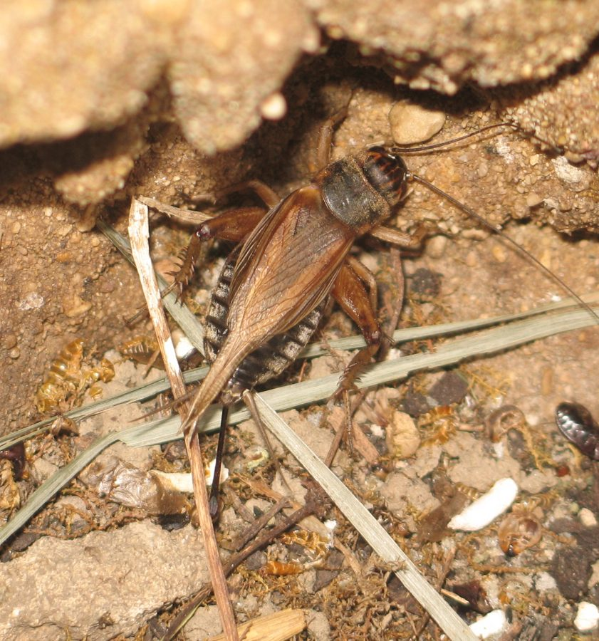

हाउस क्रिकेटHouse Cricket
Acheta domesticus · Gryllidae · INS-0292

- Scientific name वैज्ञानिक नाम
- Acheta domesticus (Linnaeus, 1758)
- Family कुल
- Gryllidae
- Hindi हिंदी
- हाउस क्रिकेट
- Local names स्थानीय नाम
- house cricket
- Status here यहाँ की स्थिति
- native
- Movement आवागमन
- Resident, here all year
- Known from कहाँ दर्ज
- Others have published records from the wider Awadh–Purvanchal plain, none yet from Basti–Ayodhya अवध–पूर्वांचल से दूसरों के प्रकाशित अभिलेख, बस्ती–अयोध्या से अभी नहीं
- IUCN IUCN
- not evaluated
- Review समीक्षा
- not yet reviewed
When to look कब देखें
Present all year. साल भर मौजूद।
Tell it apart from इनसे अलग पहचानें
हाउस क्रिकेट / House Cricket
Acheta domesticus (Linnaeus, 1758) — Gryllidae
हाउस क्रिकेट — घरों, रसोइयों और अनाज भंडारों में पाया जाने वाला परिचित हल्का पीला-भूरा झींगुर, जिसकी रात की झनकार भारतीय घरों का चिर-परिचित हिस्सा है।
Quick Identification त्वरित पहचान
| Feature | Description |
|---|---|
| Coloration | Pale yellowish-brown or straw-colored with dark brown markings |
| Head | Rounded, straw-yellow with distinct dark transverse bands across vertex |
| Wings | Both sexes fully winged; forewings cover abdomen, hindwings project past |
| Stridulation | Clear, loud, rhythmic chirping produced by male rubbing tegmina together |
| Cerci | Long, slender, flexible sensory filaments projecting from abdomen tip |
| Female ovipositor | Slender, needle-like, straight, slightly darker at tip |
Field tip: Pale straw-colored cricket with dark bands between the eyes; unlike the tropical house cricket, both sexes are fully winged and capable of flight.
हिंदी: हल्का पीला-भूरा रंग, सिर पर गहरी पट्टियां और दोनों लिंगों में पूरी तरह विकसित पंख इसकी पहचान हैं।
Morphology आकारिकी
Measurement not available in consulted sources.
A medium-sized gryllid cricket with a moderately slender, cylindrical body colored pale straw-yellow, greyish-ochre, or yellowish-brown. The head is broad, globular, smooth, and pale, highlighted by three dark brown or blackish transverse cross-bars: one across the vertex between the eyes, one across the front of the eyes, and one behind the antennae. Compound eyes are prominent, rounded, and dark. Antennae are exceptionally slender, setaceous, and considerably longer than the body.
The pronotum is subquadrate, slightly wider than long, with straight lateral margins, pale yellowish ground color, and mottled dark brownish markings on the disc. Unlike wingless or brachypterous cricket species, both sexes of Acheta domesticus possess fully developed wings: the tegmina are leathery, overlapping horizontally over the abdomen, while the membranous hind wings are longer and fold like slender tails extending well beyond the abdominal apex.
The legs are pale yellowish-brown with faint darker mottling; the hind femora are enlarged and muscular for leaping, and the hind tibiae bear two rows of articulated spines. The female possesses a straight, slender, lance-like ovipositor used for inserting eggs into moist crevices or soil (Clifford et al. 1977).
हिंदी: इसका शरीर बेलनाकार, सिर पर तीन काली आड़ी धारियां और दोनों लिंगों में उड़ने योग्य लंबे पंख होते हैं। मादा के पीछे लंबी सुई जैसा अंग होता है।
Behaviour & Ecology व्यवहार और पारिस्थितिकी
Acheta domesticus is a strongly synanthropic insect whose ecology is closely tied to warm human-altered environments. It avoids cold temperatures and seeks out artificially heated niches such as bakeries, kitchen chimneys, warm grain mills, and boiler rooms. During the hot, humid monsoon season, adults also venture outdoors into gardens, compost heaps, and refuse piles.
The species is strictly nocturnal, remaining concealed in wall cracks and floor voids during the day. At night, males establish calling territories near shelters and produce a cheerful, musical chirping composed of repeating two- to three-pulse chirps (Walker 2005). The song serves both to repel rival males and attract receptive females. The diet is entirely opportunistic: crickets feed on flour, breadcrumbs, vegetable scraps, pet food, dry animal feed, paper, and occasionally textiles.
हिंदी: यह गर्म कमरों, रसोईघर और चूल्हों के पास रहना पसंद करता है। रात में नर लगातार मधुर झनकार वाली आवाज़ निकालते हैं और बची-खुची खाद्य सामग्री खाते हैं।
Life Cycle / Phenology जीवन चक्र
Breeding is continuous indoors where warmth and food are available year-round. Outside, reproduction occurs during the warm summer and monsoon months (May to September).
Females deposit eggs individually into damp sand, soil, or organic matter using their long ovipositor. Under warm summer temperatures, eggs hatch within a fortnight. Nymphs pass through several nymphal instars over a period of weeks to months, gradually developing wing pads and adult genitalia (Clifford et al. 1977). Adults live for several months, mating repeatedly.
हिंदी: घर के भीतर यह साल भर अंडे देता है। बच्चे दो-तीन महीनों में कई बार केंचुल बदलकर पंख वाले वयस्क बन जाते हैं।
Host Plants or Prey आहार
Opportunistic omnivore and household scavenger. In human habitations, it feeds on cereals, flour, dough, dry pet food, kitchen scraps, and paper glue. In outdoor compost piles, it consumes decaying fruit, vegetable matter, and dead invertebrates. Shares domestic spaces with Gryllodes sigillatus and Gryllus bimaculatus.
हिंदी: यह आटा, रोटी के टुकड़े, अनाज, गिरी हुई सब्जियां और रसोई का कचरा खाता है।
Predators / Natural Enemies शत्रु
Commonly preyed upon indoors by wall geckos (Hemidactylus flaviviridis), huntsman spiders, and domestic cats. Outdoors, toads, frogs, shrews, bats, and owls capture crickets active at night, while chickens and insectivorous birds forage for them by day.
हिंदी: घरेलू छिपकलियां, मकड़ियां, चूहे और मुर्गियां इसका तेजी से शिकार करते हैं।
Agricultural / Human Relevance कृषि प्रासंगिकता
Acheta domesticus is primarily a domestic nuisance rather than an agricultural field pest. Large populations in grain warehouses or food preparation areas can contaminate foodstuffs with droppings. In clothing stores and homes, crickets may occasionally chew holes in wool, silk, or cotton fabrics. Globally, this species is widely farmed as live food for reptiles and pets, and investigated for animal feed.
हिंदी: यह फसलों का कीड़ा नहीं है, लेकिन घरों और दुकानों में कपड़ों व कागजों को कुतर सकता है। दुनिया भर में इसे पालतू जीवों के भोजन के रूप में पाला जाता है।
Expected Locally स्थानीय रूप से अपेक्षित
Not a field record. Written from published accounts for eastern Uttar Pradesh. No confirmed local sighting yet — if you have seen it, that is what the atlas needs.
अभी तक स्थानीय पुष्टि नहीं। यह विवरण प्रकाशित स्रोतों से है, किसी अवलोकन से नहीं।
GBIF holds published records from the wider Awadh–Purvanchal plain, none yet from Basti–Ayodhya. Expected throughout Basti district in rural and semi-urban dwellings, bakeries, flour mills, and grain warehouses. Often betrayed by its persistent rhythmic chirping from behind cupboards or hearths on summer nights. A first record would be a photograph of the adult with place and date, sent through the About page.
Distribution वितरण
Global range: Cosmopolitan worldwide; considered native to southwestern Asia or the Mediterranean basin and distributed globally through human commerce.
In India: Found across all states and union territories, universally associated with urban and rural habitations.
In Uttar Pradesh: Associated with urban and rural human habitations across the state.
In Basti district / eastern UP: Expected in every tehsil across domestic dwellings, grain storage sheds, and livestock quarters.
हिंदी: यह पूरी दुनिया में इंसानों के घरों में पाया जाता है। उत्तर प्रदेश के सभी नगरों, कस्बों और गांवों में यह आम है।
Research Questions शोध प्रश्न
- What microclimatic factors determine the relative abundance of Acheta domesticus versus Gryllodes sigillatus in Awadh homes?
- Are local house cricket populations resistant to commonly used household pest control insecticides?
- How far do adults disperse from indoor shelters into adjacent agricultural fields during the monsoon?
- क्या बस्ती जनपद के आटा मिलों और अनाज गोदामों में यह झींगुर आर्थिक रूप से महत्वपूर्ण नुकसान करता है?
- क्या आधुनिक पक्के घरों में कीटनाशकों के प्रयोग से इसकी संख्या में कोई कमी आई है?
Similar Species मिलती-जुलती प्रजातियाँ
| Species | Key Difference | हिंदी | |
|---|---|---|---|
| Gryllodes sigillatus ([[tropical_house_cricket | Tropical House Cricket]]) | Males have short wings, females completely wingless; pale tan with dark pronotal band | ट्रॉपिकल हाउस क्रिकेट |
| Gryllus bimaculatus ([[field_cricket | Field Cricket]]) | Jet black, robust body; large yellow spots at wing base; burrows in soil and agricultural fields | काला झींगुर |
| Gryllotalpa orientalis ([[mole_cricket | Oriental Mole Cricket]]) | Fossorial front legs modified for digging; subterranean burrower; velvety cylindrical body | भुरभुरा कीड़ा |
Field rule: Pale straw-yellow body, distinct dark transverse bands across the head, fully developed wings in both sexes, and domestic habitat = Acheta domesticus.
Taxonomy & Classification वर्गीकरण
Original description. Described by Carl Linnaeus (1758) in Systema Naturae (10th ed.), p. 428, under the original name Gryllus (Acheta) domesticus. Linnaeus noted its habit of living in domestic hearths. The generic name Acheta is ancient Greek for singer or cicada, while domesticus refers to its house-dwelling habit.
Subspecies. Monotypic — no subspecies are currently recognized.
Family and order placement. Order Orthoptera, suborder Ensifera, family Gryllidae (true crickets), subfamily Gryllinae.
IUCN status rationale. Not evaluated. Abundant globally with no conservation threats.
हिंदी: इसे 1758 में लिनिअस ने Gryllus domesticus नाम दिया था। यह ग्रिलिडी परिवार का कीट है और दुनिया भर में इंसानी बस्तियों से जुड़ा हुआ है।
Photo Gallery फोटो गैलरी
No photos yet — add field photos to media/species/house_cricket/ and run node scripts/sync_photos.js.
Photos needed आवश्यक फोटो
- [ ] Adult on floor or wall showing pale straw coloration and dark head bands (घरेलू झींगुर की स्पष्ट तस्वीर)
- [ ] Male chirping showing raised overlapping tegmina (आवाज़ निकालते हुए नर झींगुर की तस्वीर)
References संदर्भ
- Linnaeus, C. (1758). Systema Naturae per Regna tria naturae (10th ed.). Holmiae, vol. 1, 824 pp. (as Gryllus domesticus).
- Clifford, C. W., Roe, R. M. & Woodring, J. P. (1977). Rearing Methods for Obtaining House Crickets, Acheta domesticus, of Known Age, Sex, and Instar. Annals of the Entomological Society of America, 70(1), pp. 69–74. doi:10.1093/aesa/70.1.69
- Walker, T. J. (2005). House Cricket, Acheta domesticus (Linnaeus). EDIS, 2005. doi:10.32473/edis-in220-1999
- GBIF Occurrence Data — Acheta domesticus, India (2025).
Source file: species/fauna/insects/house_cricket.md